M.S. Electrical and Computer Engineering, Boston University Graduate Teaching Assistant, Electronics Design
I work on the two ends of the same problem: the bioelectronic devices that record a physiological signal, and the computational methods that turn that signal into something a clinical decision can rest on.
On the computational side, that has meant high-density ECG analytics for sudden cardiac death risk at IHU Liryc, and machine learning for real-time image-activated cell sorting at the University of Tokyo. On the device side, it has meant metal–insulator–metal biosensors built up from a titanium substrate, and bacteria genetically engineered to display a protein tag that carries therapeutic cargo. The methods differ; the discipline does not. In both, most of the work is understanding the noise well enough to know what the measurement is actually telling you.
Methods work on physiological data: cardiac electrophysiology, single-cell imaging, and retrieval systems over personal health records.
2026 Bordeaux
Repolarization markers for sudden cardiac death risk stratification
PulsHeart Medical, under the Institute of Heart Research and Cardiac Modeling (IHU Liryc)
Sudden cardiac death risk is difficult to assess from the body surface because the repolarization features that carry the prognostic signal sit close to the noise floor of high-density ECG. Separating the two is the substance of the problem, not a preprocessing step before it.
I established a Python analytics pipeline that first isolates and characterizes HD-ECG noise explicitly, then extracts and benchmarks repolarization metrics using NumPy, SciPy and pandas. The pipeline is containerized with Docker on AWS EC2 and S3, under Git workflows aligned with medical device regulatory practice, with outputs validated through unit testing. The result is a set of specific, interpretable cardiac risk markers rather than an opaque score — and Matplotlib visualizations of metric performance that let clinical and engineering reviewers examine the same evidence.
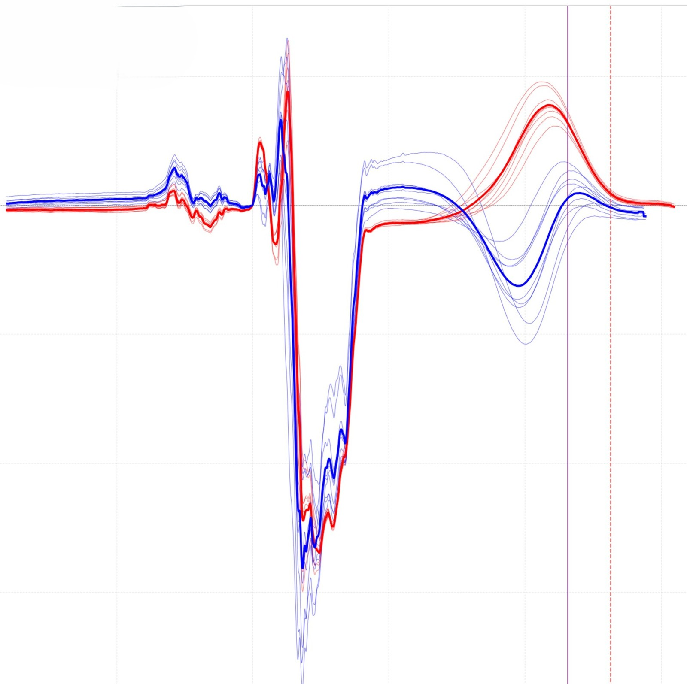
Figure 1. Ensemble-averaged beats from two groups, overlaid. The complexes agree closely through depolarization and separate through repolarization — the T-wave interval is where the prognostic signal sits, and where the measurement markers are placed.
Automated delineation and beat-origin labelling for an HD-ECG corpus
PulsHeart Medical, under IHU Liryc
Validating cardiac models requires a large and consistently labelled corpus. Manual delineation does not scale, and label inconsistency propagates silently into every result derived from the data.
I expanded the annotation database in Python, automating signal delineation and beat-origin labelling with SciPy, and designed the digital filtering and statistical feature-extraction routines that reduce noise across multichannel recordings. Noise sources were characterized rather than merely suppressed. Annotation quality was visualized in Matplotlib and documented in reproducible Jupyter reports, so label quality could be audited instead of assumed.
Figure slot — ecg-annotation.png automated delineation against manual annotation
Figure 2. Automated delineation compared with manual annotation on the same beat.
Python · SciPy · NumPy · Matplotlib · Jupyter
2024 Tokyo
Machine learning for high-throughput image-activated cell sorting
Serendipity Lab, Prof. Keisuke Goda, Department of Chemistry, The University of Tokyo · Amgen Scholars Fellowship
Fluorescence-activated cell sorting compresses a cell image into an intensity measurement, discarding the morphochemical and spatial structure that frequently carries the information of interest. Image-activated sorting preserves that structure, but the interval between image acquisition and sorting actuation is short enough that practical systems fall back on simple feature gating — which discards the multidimensional data the instrument just acquired.
Working on Saccharomyces cerevisiae in a 32 mm microfluidic chip, I processed terabytes of VIFFI imaging data through Python pipelines, extracted shape, size and fluorescence-intensity features with OpenCV and scikit-image, and benchmarked feature gating against Random Forest, XGBoost, PyTorch convolutional networks and autoencoder-based unsupervised models, comparing F1 scores and confusion matrices across them. The approach reached an F1 of 0.81 at 2,000 sorting events per second and a flow rate of 1 m/s.
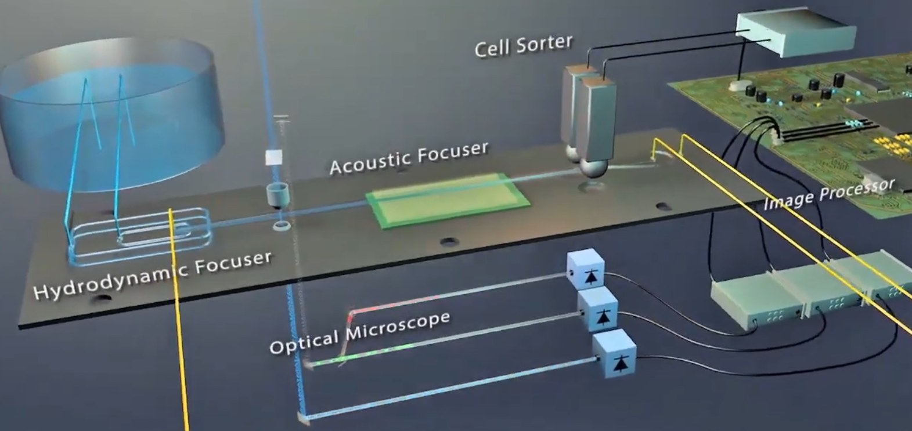
Figure 2. The image-activated cell sorting system in the Goda Laboratory. Cells are focused hydrodynamically and acoustically, imaged in flow, classified by the image processor, and diverted by the sorter.
A route to super-resolution in high-throughput sorting
Design proposal, Goda Lab, The University of Tokyo
The roughly 250 nm spatial resolution of the sorting system is a diffraction limit, and optofluidic systems trade throughput, sensitivity and spatial resolution against one another. Structured illumination microscopy would break that limit, but it requires images under at least three grating orientations — which a single-pass flow system does not obviously afford.
I proposed a continuous light-stitching approach: a serial array of rotating scanners paired with charge-coupled device time delay and integration, acquiring the required grating orientations along the flow path rather than by arresting the cell. The proposal was received as technically feasible, and offers a path to adding super-resolution and three-dimensional modalities to an existing platform rather than replacing it.
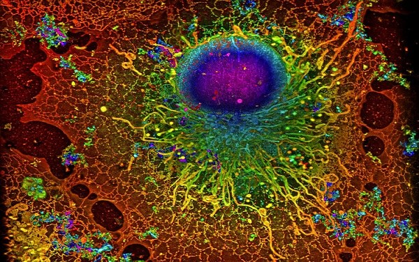
Figure 3. Spatial detail of the kind sub-diffraction imaging preserves and intensity-based sorting discards.
Structured illumination microscopy · CCD time delay and integration · optofluidic system design
2025
Retrieval-augmented generation over multiple personal health collections
Independent project, open source
Sleep guidance that is actually useful must draw on wearable recordings, a user profile, location context and a reference knowledge base simultaneously — precisely the data that should not leave the device.
I built a retrieval-augmented chatbot that indexes several structured and semi-structured collections into a single retrieval index, with a summarization-based memory layer that carries conversational context across turns. Inference runs entirely locally; the agent is exposed through JSON APIs with YAML-configured pipelines. The components separate cleanly: ingestion builds the index, retrieval serves context, the memory module maintains rolling summaries, and the agent composes the two.
Biosensors fabricated from the substrate up, and bacteria engineered to carry therapeutic cargo under magnetic guidance.
2024 Zürich
Genetically encoded surface display for Gram-negative bacterial microrobots
Master's thesis, Medical Microsystems Lab, Prof. Simone Schürle-Finke, Department of Health Sciences and Technology, ETH Zürich · 9.0/10
Chemotactic tumour-homing bacteria, magnetically guided and loaded with cargo, constitute a capable delivery platform. The conventional route to attaching that cargo is harsh chemical functionalization, which damages the cells and is costly at scale.
I replaced it with a genetically engineered alternative, engineering E. coli BL21(DE3) and B. subtilis 168 to display a HaloTag fusion that forms a covalent bond with cargo conjugated to a chloroalkane-linker ligand. Primers were designed in Benchling; genomic DNA extracted and purified; the construct amplified by PCR and restriction cloning, assembled by Gibson Assembly, introduced by electroporation or heat-shock transformation, then expressed. For magnetic functionalization I activated PEG-coated iron-oxide nanoparticles with chloroalkane-PEG2000-NHS ester, purified by magnetic separation and dialysis, and actuated the resulting microrobots under rotating fields on a Magnebotix MFG-100-i.
The obstacle. Nanoparticle loading per microrobot was not reproducible, and it was not evident whether the cause lay in tag expression or in the attachment chemistry. I developed a quantification method to settle the question: time-resolved gating against a 0–500 nM Cy5 calibration series, fitted to determine HaloTag molecules per cell after background subtraction, yielding a working equation and a rapid absorbance and fluorescence measurement that could be applied to every batch before functionalization. Nanoparticles per bacterium were then counted from transmission electron micrographs by particle analysis in ImageJ, with distributions plotted in Origin.
Approximately 2,000 surface-displayed HaloTag peptides per bacterium stood against only around 200 functionalized nanoparticles. That discrepancy located the failure mode in steric hindrance from the bulky nanoparticles rather than in insufficient tag expression, and indicated a longer PEG cross-linker as the correction. Alongside the thesis I automated the microscopy image analysis in ImageJ macros and Python, replacing manual binding counts, and trained a regression model on in-vitro assay data to predict cargo attachment efficiency and guide subsequent experiments. Protocols were written in full for replication.
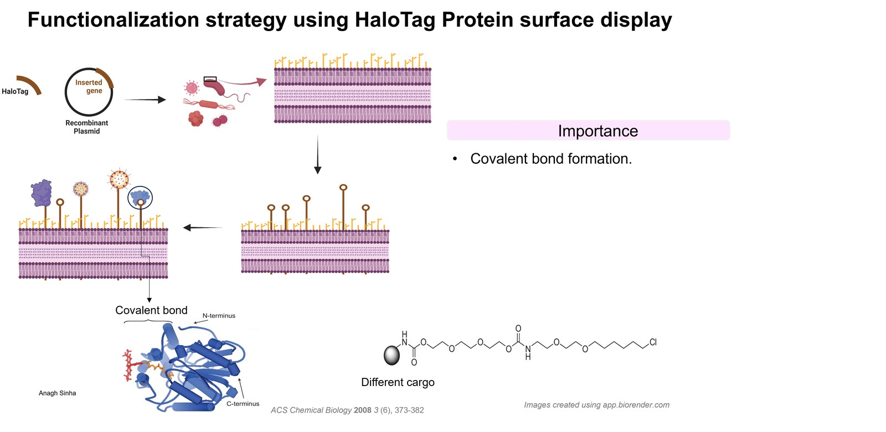
Figure 4. Functionalization strategy. A recombinant plasmid places HaloTag on the bacterial surface, where it forms a covalent bond with cargo carried on a chloroalkane ligand.
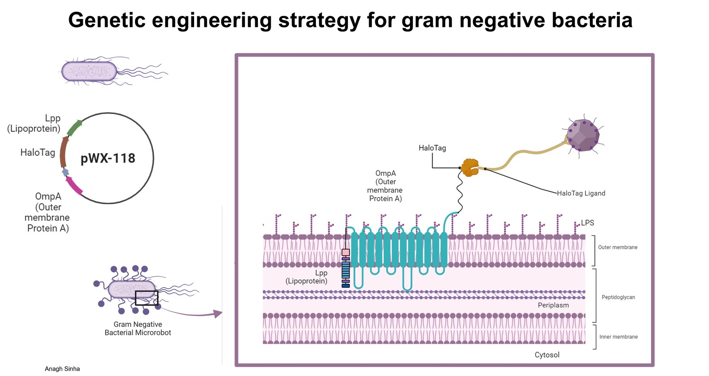
Figure 5. The pWX-118 construct displays HaloTag on the E. coli outer membrane through an Lpp–OmpA anchor, where it captures a ligand-conjugated nanoparticle.
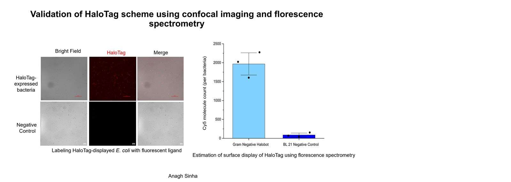
Figure 6. Validation by confocal imaging and fluorescence spectrometry. Labelling with the fluorescent ligand gives roughly 2,000 Cy5 molecules per bacterium against a near-zero negative control.
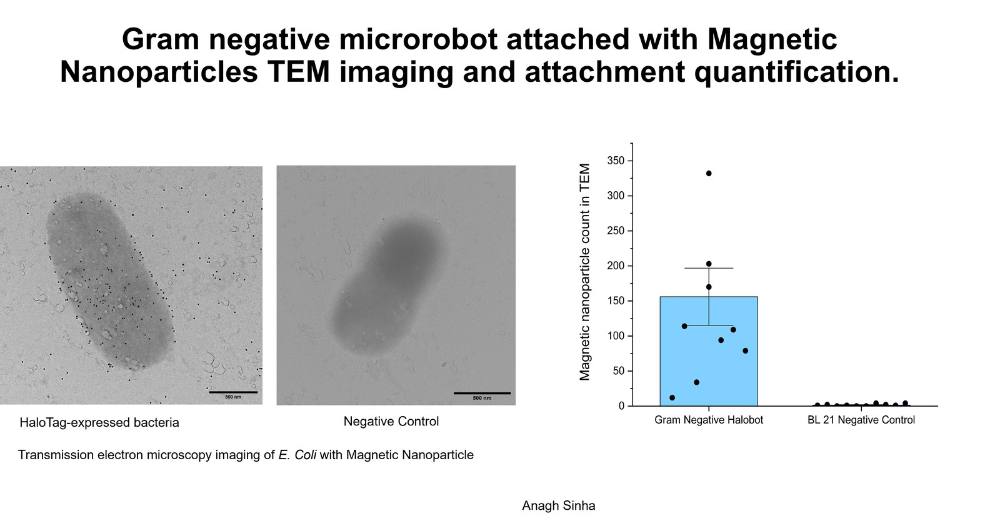
Figure 7. Transmission electron microscopy of magnetic nanoparticle attachment. Counts centre near 150 per cell against a negative control at essentially zero — far below the number of tags available.
Sortase-mediated surface display on Gram-positive carriers
Medical Microsystems Lab, ETH Zürich
Gram-positive gut probiotics are attractive as carriers because their thick polysaccharide capsules confer considerably longer stability in vivo than Gram-negative hosts. Their surface architecture, however, makes display correspondingly harder.
I designed a construct combining HaloTag, a signal peptide, a PEG cross-linker and a sortase binding motif, built on sortase-mediated cell surface display. Using multiple sequence alignment together with protein structure databases including DeepFold, I identified hydrophobic chains that are functionally essential but not conserved between the sortase binding motif and native surface-displayed proteins — the regions where a fusion can be introduced without disrupting what the native display machinery depends upon.
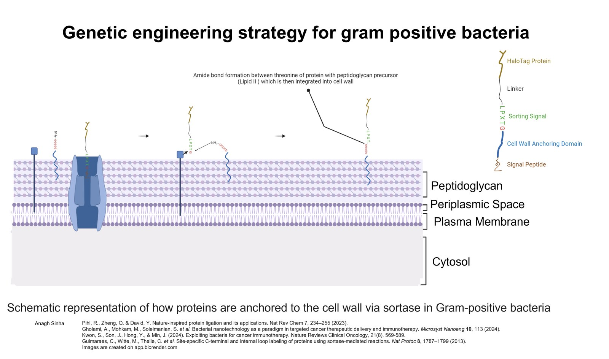
Figure 8. Sortase-mediated display in B. subtilis. An LPXTG sorting signal lets sortase anchor the HaloTag construct covalently into the peptidoglycan wall.
Label-free metal–insulator–metal biosensing of cancer-associated fibroblasts
Centre for Research Excellence in Semiconductor Technologies, Prof. Arnab Hazra, BITS Pilani · 10/10
Label-free electrochemical biosensors read biomolecules through their intrinsic properties, which makes them both robust and inexpensive. Cancer-associated fibroblasts alter and remodel the extracellular matrix, so that remodelling is in principle electrically detectable — and detecting it cheaply would bring tumour-microenvironment readout within reach of point-of-care diagnosis.
I contributed to fabricating a metal–insulator–metal biosensor on a titanium substrate functionalized with high-surface-area TiO₂ nanotubes and a deposited silver top electrode.
The obstacle. Three faults emerged together: poor signal-to-noise ratio, low cell adhesion, and incompatibility between the extracellular matrix and the nanotube surface. I deposited electrospun PMMA nanofibre modelled on native matrix, which is compatible with both cell attachment and matrix deposition, then moved to a lateral device geometry using a 200 µm photolithographically etched indium tin oxide pattern on glass. That change resolved the signal-to-noise problem and eliminated the post-fabrication top-electrode deposition step that had constrained the device's applications.
The device gave statistically significant differentiation between normal human primary fibroblasts and chemically induced cancer-associated fibroblasts across growth-factor concentrations, measured by electrochemical impedance spectroscopy and current–voltage hysteresis. I applied k-means and hierarchical clustering to the impedance and I–V data to classify sensor responses, and wrote the Python tooling that standardized electrochemical data analysis across the laboratory.
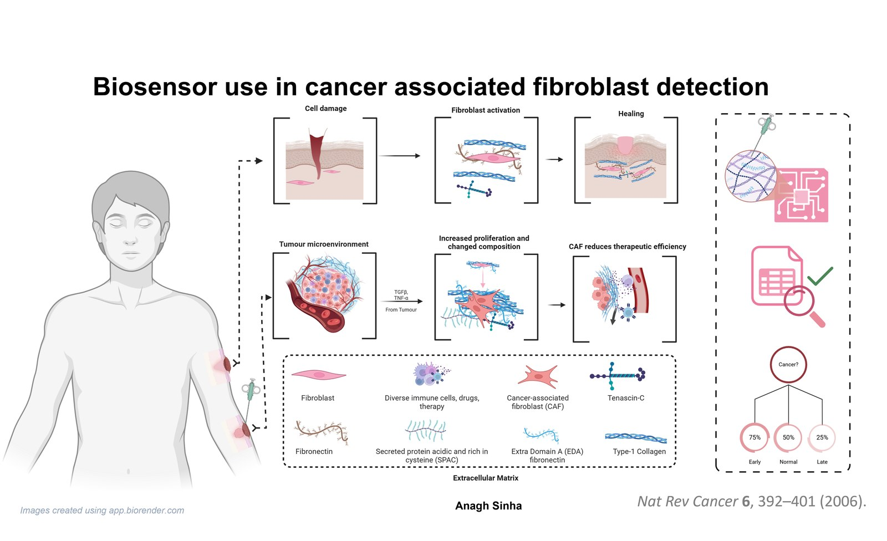
Figure 9. Cancer-associated fibroblasts remodel the extracellular matrix. That change in composition is what the sensor is built to read electrically.
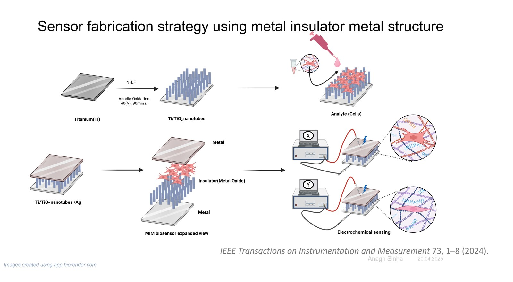
Figure 10. Fabrication route. Titanium is anodized to a TiO₂ nanotube layer, cells are deposited as the analyte, and the metal–insulator–metal stack is read electrochemically.
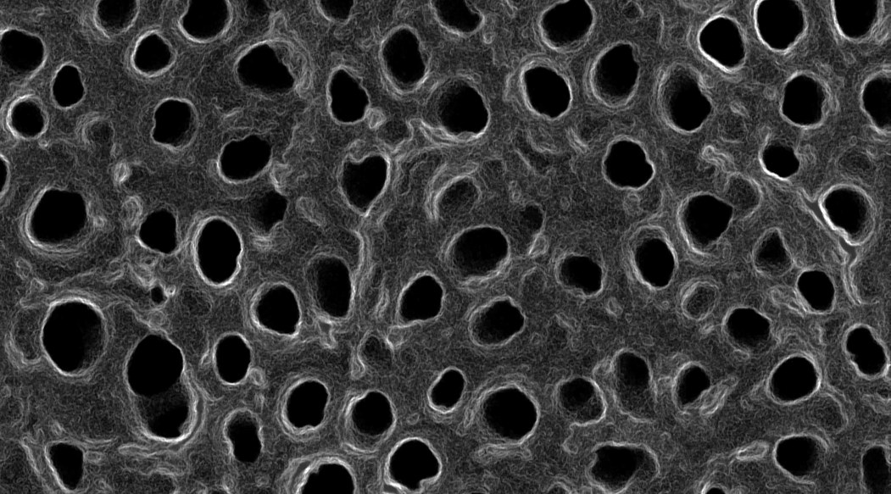
Figure 11. The anodized TiO₂ nanotube array that gives the device its high surface area.
Stretchable dry nanomaterial electrodes for long-term electromyography
Centre for Research Excellence in Semiconductor Technologies, BITS Pilani
Gel electrodes dry out, so long-term muscle-activity monitoring degrades over exactly the timescale that makes it clinically interesting. I designed and fabricated stretchable dry electrodes from one- and two-dimensional nanomaterials, including carbon-nanotube constructions, intended to maintain skin contact and signal quality through movement and time rather than through conductive gel.
Figure slot — dry-electrode.png electrode on skin with recorded EMG trace
Figure 9. Dry carbon-nanotube electrode and the electromyogram recorded through it.
Three questions I am looking for collaborators and supervision on.
Tumour and glioma microenvironment. Which gene-expression changes in cancer and neurodegenerative disease microenvironments drive onset and progression, and which of them are legible to a device rather than only to sequencing.
Neurobiology and single-cell multi-omics. Therapeutic approaches to Parkinson's disease and brain cancer, combining molecular biology, immunology, instrumentation and computational biology with nanomaterial-based nanoelectronics.
Bioelectronic interfaces. The body runs on a dense electrical network. Where that network can be intercepted — and with what, at what scale — determines what can be read from it and modulated in it.
Positions and education
M.S. Electrical and Computer Engineering, Boston University, 2026–2028. Dean's Scholarship for Excellence. Graduate Teaching Assistant, Electronics Design.Boston, Massachusetts
Junior Signal Processing Engineer, PulsHeart Medical, under IHU Liryc, February–August 2026.Bordeaux, France
Signal Processing Consultant, PulsHeart Medical, under IHU Liryc, September 2025–February 2026.Remote
Master's Project Student, Medical Microsystems Lab, ETH Zürich, August–December 2024.Zürich, Switzerland
Research Trainee, Serendipity Lab, The University of Tokyo, June–August 2024. Amgen Scholars Fellowship.Tokyo, Japan
Research Student, CREST, BITS Pilani, January 2022–July 2025.Pilani, India
B.E. Electronics and Instrumentation Engineering with M.Sc. Biological Sciences, BITS Pilani, 2020–2025.Dual degree
Publications and presentations
Chauhan, S., Joshi, T., Adhikari, U., Sinha, A., Deepa, P., & Sharma, P. K. (2024). Desert legumes as sustainable sources of proteins and bioactive peptides. Food and Humanity, 2, 100295.doi:10.1016/j.foohum.2024.100295
Sinha, A., Takada, Y., Ding, T., Goda, K., & Ohya, Y. (2024). High-speed intelligent image-activated cell sorting of yeast cells.Oral presentation, UTokyo Scholars Program Conference, Tokyo
Sinha, A., Takada, Y., Ding, T., Goda, K., & Ohya, Y. (2024). Deep learning and machine learning in high-throughput image-based yeast sorting.Poster, Amgen Scholars Asia Symposium, Tokyo. Best Poster Award
Awards
Amgen Scholars Fellowship, 2024.Harvard-directed, Amgen Foundation-funded research fellowship
Best Poster Presentation, Amgen Scholars Asia Symposium, 2024.
Dean's Scholarship for Excellence, Boston University College of Engineering.
Spirit of Invention Scholar, 2021.Institute for International Education and Avery Dennison Foundation; one of ten in India
Teaching and service
I am a graduate teaching assistant for Electronics Design in the ECE department at Boston University, and a research mentor and invited panellist for the Biomedical Engineering Society there, guiding student design projects.
Each project on this page states what failed before it states what worked, because the failure is usually the part that transfers. Students working on biosensor fabrication, biosignal pipelines or bacterial surface display are welcome to write to me, particularly when something is not reproducing — I wrote replication protocols for the ETH work for that reason.
Before this I founded Oxon, a municipal waste-management pilot run with local government in a town of over 200,000, tracking collection infrastructure and vehicles. I led a team of ten engineers selected from 150 applicants; the work received PIEDS incubation, an Esri partnership, a grant from the Institute for International Education, and TiE support.